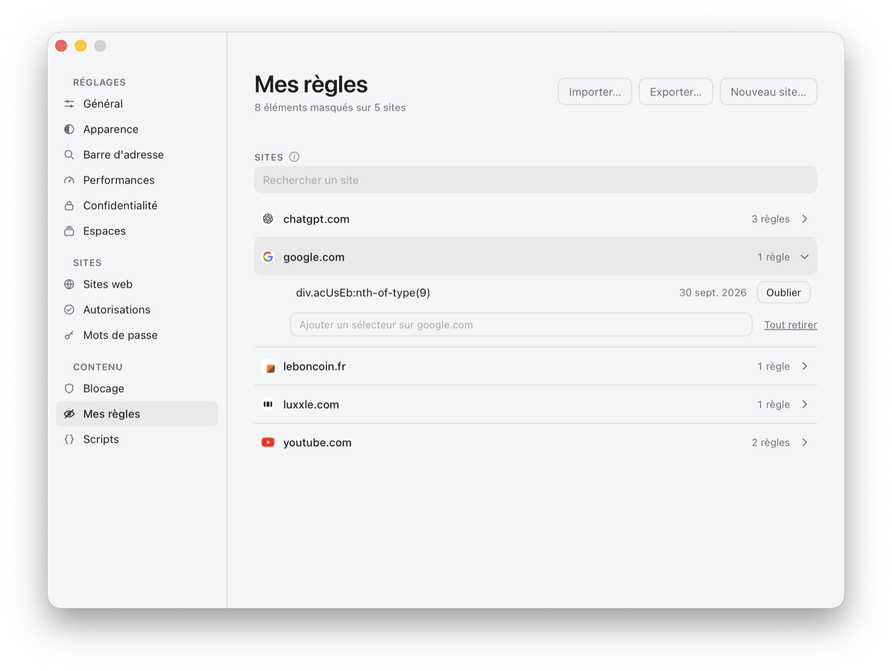

WujiBlocking
Blocking
Wuji ships no list. As long as you haven't chosen anything, it blocks nothing and has contacted no one. What you choose comes from uBlock Origin, and WebKit is what applies it.
The catalog
Sixty-eight lists, uBlock Origin's: its groups, its addresses, nothing else. Each one is checked and turned off on its own; unchecked, it leaves the engine and the disk.

| Family | Lists | What it targets |
|---|---|---|
| uBlock Origin | 6 | ads, privacy, risky sites, quick fixes, unbreak |
| Ads | 3 | EasyList, AdGuard, ad networks |
| Privacy | 2 | EasyPrivacy, tracking |
| Malicious sites | 2 | phishing, malware |
| Multipurpose | 2 | host lists covering several families |
| Annoyances | 16 | cookie banners, pop-ups, widgets, reminders |
| Regions | 37 | lists by language and by country |
The recommended selection
One button installs nine lists at once: uBlock Origin's five — filters, risky sites, privacy, quick fixes, unbreak —, EasyList, EasyPrivacy, Peter Lowe and URLhaus.
By family, as chips
A row of chips filters by category, a field by name, and the two combine. A whole family is checked in one gesture: “Enable all (7)”.
WebKit does the filtering
In the network process
Rules are compiled by WebKit and applied before the request leaves: a blocked request never leaves, and the page never learns it was stopped. A JavaScript blocker comes in afterwards and can be detected.
Converted separately, in public
The Wuji-Rules-List repository fetches the original lists and converts them to WebKit's content blocker format. Wuji reads the catalog and compiles what you point it to.
Compiled once
Turning megabytes of rules into a decision table takes a few seconds; WebKit keeps the result, and the next launch recompiles nothing.
Beyond 150,000 rules
WebKit refuses more in a single list. Large ones are split, and each piece compiles on its own — the limit is per list, not per browser.
Unchecking frees the space
Compiled tables weigh more than the lists: unchecking removes them from disk, and a sweep at launch removes whatever was left behind.
What WebKit can't do
WebKit's format can only hide with display:none and runs nothing. What the lists ask for beyond that, Wuji replays — behind a switch.
Injection rules
Styles, extended selectors and primitives the conversion had to set aside: Wuji applies them, at three levels — a style sheet in the common case, a compact removal, the evaluator only when a selector requires it.
uBlock Origin's own code
The counters to anti-adblock walls, the script surrogates, rewriting a response before the page reads it come from uBlock Origin's code, copied as is and updated with its releases. That's what keeps YouTube's ads at bay.
uBlock Origin's safeguards
“Trusted” scriptlets only come from its lists, a style rule loads nothing — no url(), no @import —, and lists arrive over HTTPS end to end: a hijacked list couldn't read what you type.
Tiny in every page
Nothing is sent for a site no list mentions; two rules per site at the median. And the watcher goes to sleep after thirty seconds without a change in the page.
A real switch
It's a different mechanism — injected style, executed code —, and it doesn't impose itself without saying so: the blocking page carries its switch and its count.
Lists kept up to date
At most once a day
Lists in use are checked at the cadence you choose, never more than once a day; only a new version is recompiled, and the old one only leaves once the new one is in use.
Update all
A button that only appears when it has something to do, and says how much. Network and compilation overlap; a list that fails doesn't stop the others.
Nothing moves under your finger
A box stays checked while the work happens, and what's working says so on its own line — the list doesn't jump under the click.
Your rules
A list blocks what others have listed. What remains is the banner on a site only you visit.

Hide an element
“Hide an element…”, from the shield: hovering shows, clicking chooses, Escape gives up. The selector is computed short, to survive the page's next redesign. The panel lives apart from the page: it can neither add nor remove a rule on your behalf.
A WebKit rule, not a script
What comes out is a css-display-none rule, filed under the site and compiled with the others: it applies inside the engine, before the page draws.
Right away
The element disappears on the click, not on reload — and comes back the same way when you remove the rule.
Export, import, no conversion
The file is exactly what WebKit compiles, and it reads back as is. Nothing comes in without WebKit having compiled it separately first.
Pausing, site by site
A site a list breaks starts working again by lifting blocking on it alone, from the shield; the rules come back as soon as you leave it.
Pop-ups and redirects
The gesture decides. A script in a world of its own says what each click landed on, and the judge rules.
| The gesture | Verdict |
|---|---|
| A button, a login, a key on the keyboard | opens |
| An ordinary link, a large clickable card showing text | opens |
| A click on the page background that builds a link and clicks it | held back |
| A link you can't see — transparent, empty, whatever its size | held back |
| The second window from the same click | held back |
| No gesture, or a gesture older than a second and a half | held back |
Announced, never lost
Each held-back window is announced by a badge, which opens it if you wanted it. No per-minute limit: that one held back the fifth link you opened while reading.
Pop-up rules, applied
Lists precisely target windows opened toward an ad network, and WebKit doesn't apply those rules. Wuji picks them up and applies them before opening anything — in three hundredths of a millisecond.
The page stays
A click on the background of a streaming page that sends the tab to a refused ad no longer replaces the site: the page stays, a badge says so.
The ad tab closes itself
The only exception to “no tab closes on its own”: born from a pop-up, having never shown anything, and refused by the lists within its first ten seconds. A setting turns it off.
What blocking doesn't tell you
- No blocked-request counter. WebKit applies the rules in its network process and reports nothing back to the app. The shield shows what's in use, and how many elements your rules hide here — not a made-up number.
- Part of the syntax has no equivalent. The catalog shows, for each list, the share of its rules the conversion managed to carry over.